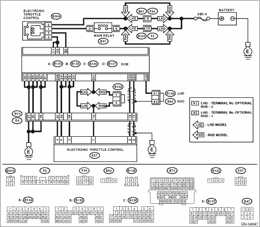

DTC DETECTING CONDITION:
Immediately at fault recognition
CAUTION:
After repairing or replacing the defective part, perform the Clear Memory Mode  and Inspection Mode .
and Inspection Mode .
WIRING DIAGRAM:


| STEP | CHECK | YES | NO |
|
Is the resistance 1 MΩ or more? |
|
Replace the electronic throttle control relay. |
|
|
Is the voltage 5 V or more? |
|
Repair the short to power supply in harness between ECM and electronic throttle connector. |
|
|
Is the resistance 1 MΩ or more? |
Repair the poor contact of ECM connector. Replace the ECM if defective. |
Repair the ground short circuit of harness between ECM and electronic throttle control relay. |